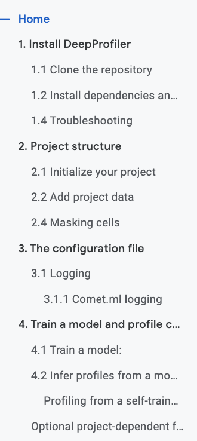

How to make a google doc into a JupyterBook
Install necessary software
- Docs to Markdown Google Add-on
- pip install -U jupyter-book
Make sure your google doc is organized
- H1 headings will become separate pages for the JupyterBook
- Example structure (pages will be Home, 1. Install DeepProfiler, etc.):
- 
- How to indicate code? Courier new or monospaced fonts
- How to indicate notes? (also warning, tip, important) - check out next section
Convert the Google doc to markdown
- Go to Add-ons > Docs to Markdown > Convert
- Check the boxes for Suppress info comment and Use reckless mode
- Hit the blue “Markdown” button
Paste into Atom and save as markdown file (.md)
Run my script to generate JupyterBook files
- md2Book(filepath, delim="\n# ", bookName="mybook", numbered=False, savePath="same", makeTOC=True, Landing="Home")
- Download and fix image refs
- Download images from Google doc File > Download > Web page
- Images will have names where the number doesn’t correspond to order. Change the image files to be correct
- Images should be located in docs/images/ and should have names like “image1.png”
Add a config file
Should be added in /mybook folder
- Here’s a good example: Configuration reference
Build the book
- In terminal, navigate to book
- jupyter-book build --all mybook/
Example page 1 - notes and panels
Notes
```{note}
Here is a note!
```
OR
:::{note}
This text is **standard** _Markdown_
:::
Panels
````{panels}
Panel header 1
^^^
Panel body 1
+++
Panel footer 1
---
Panel header 2
^^^
Panel body 2
+++
Panel footer 2
````
Example page 2 -dropdowns and tabs
Dropdowns
```{dropdown} Here's my dropdown
And here's my dropdown content
```
```{note}
:class: dropdown
The note body will be hidden!
```
:::{admonition} Click here!
:class: tip, dropdown
Here's what's inside!
:::
Tabs
```{tabbed} Tab 1 title
My first tab
```
```{tabbed} Tab 2 title
My second tab with `some code`!
```